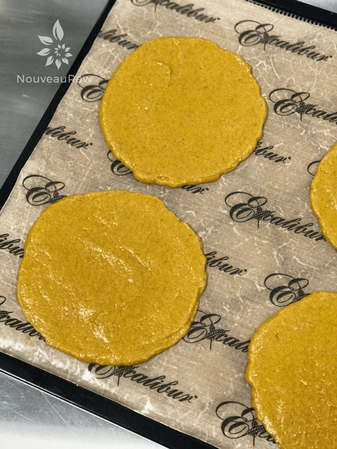
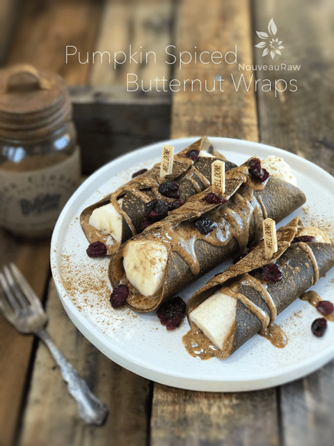

Pumpkin Spiced Butternut Wraps

~ raw, vegan, gluten-free, nut-free ~
The main ingredient in this wrap is sweet butternut squash. I was quite pleased with the outcome in both the flavor and texture departments.
The key to getting a good flexible texture is to watch the dry time. If you end up over-drying the wrap, you can just spritz it with water to help soften it. If you under dry it, you will have a gooey, sticky mess on your hands.
The flesh of butternut is rich in dietary fiber, vitamin C, and vitamin A. I read that they are also high in Beta-carotene. This is the pigment that is responsible for the deep orange color of butternut squash, and it is a powerful antioxidant.
But let’s not forget about the seeds! Butternut squash seeds are used as nutritious snack food since they contain 35-40% oil and 30% protein. They are also a good source of dietary fiber and mono-unsaturated fatty acids that are a benefit for heart health.
Separate the seeds from the flesh, and spread them out on the dehydrator sheet, dry at 115 degrees (F) for about 12 hours or until dry. Feel free to toss them with a little seasoning too. If you can’t find butternut squash, you can always use pumpkin in its place.
Butternut squash is a winter squash and is readily available in the markets from September until the middle of December. Look for a mature squash that features a fine woody note on tapping, and is heavy in your hand. This is probably not a place to break out in a drum solo when trying to find the wood note… but there is nothing wrong with holding a beat and humming a song during the process. Be sure to avoid those with a wrinkled surface, funky spots, cuts, and bruises. Once at home, it can be stored for many weeks in a cool, dry, well-ventilated place at room temperature. However, cut sections should be placed inside the refrigerator where they keep well for a few days.
On 5/20/17 I updated the recipe (added banana) and the photos when I made the dessert dish that you see in the photos. I decided to share what I made with the wraps to inspire you. All I did was spread two tablespoons of almond butter on the wraps, laid a fresh banana in the center, folded the edges over and secured them with a toothpick. I then drizzled more almond butter on top along with a healthy sprinkle of cinnamon and dried cranberries. Be creative and enjoy!
yields 3 1/4 cups batter (yields 9 – 5 1/2″ wraps)
- 3 cups (416 g) cubed butternut squash
- 2 large (265 g) ripe bananas
- 1/4 cup maple syrup
- 2 Tbsp (30 g) coconut oil
- 2 tsp (6 g) pumpkin pie spice
- 1 Tbsp (11 g) psyllium powder
Preparation:
- Place the cubed butternut squash, bananas, maple syrup, coconut oil, pumpkin spice, and psyllium powder in a high-powered blender.
- I use the Vitamix with the tamper.
- If you don’t have a tamper, you will need to stop the machine occasionally to scrape the sides. Blend until creamy.
- Don’t attempt making this in a food processor; it won’t get creamy smooth in texture.
- The banana and psyllium really help in giving the wrap that flexible texture.
- Evenly spread layers of mixture onto teflex sheets.
- You can make a large square sheet or circles. I made 9 (5 1/2″) circles this time around.
- Don’t spread too thin or the wrap will be brittle or so thin once it’s dehydrated that it breaks once you fill and roll it.
- Dehydrate at 115 degrees (F) for 5-6 hours or until you can peel the wrap off the sheet.
- Place on the mesh sheet wrapper side down and peel the teflex off.
- Continue drying for 2 -/+ hours. Don’t over-dry.
- To prevent the edges from curling, I will place another mesh sheet over the wrap (creating a sandwich of two mesh sheets and the wrap in the center).
- If the edges do curl, you can use scissors to trim the edges if desired.
- If the wrap becomes too dry, spritz with water, and it will soften.
- Store in zip lock bags for 2-4 weeks. I stored mine in the fridge.

Create circular forms, 6-8″ are a good size to aim for. Just depends on how you want to use them. Well fiddlesticks, I forgot to snap an after shot of the wraps before I used them. As you will see in the photo below, they dark quite a bit.

© AmieSue.com